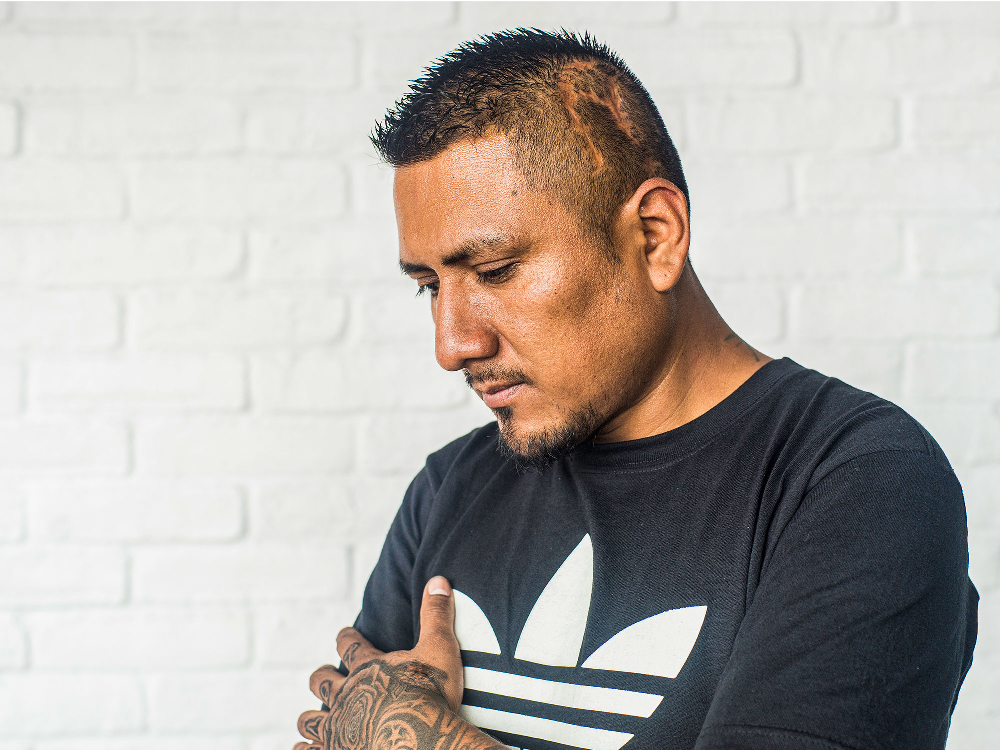

Many: I wanted to live the way I used to see on the TV. Like I used to see
other kids with a different life, with a good life, with a very nice house,
nice car. I don't know, a girlfriend, things like that. I was thinking
about my life and I say, "Man, I can't stay here in Mexico, I just want to
go there and see what happens." So that's why I take the bus and I didn't
think about anything, I just take a little bit of money and went to the
train station and I just go.
Anne: This is Many by the way and we're talking, and he just explained why
he decided to leave Mexico at the age of fifteen.
Many: Yeah, I was fifteen.
Anne: Was it hard leaving your family behind?
Many: Yeah. I wish I can take my mom, I wish I can take my brothers with
me, but I think that I had to do this by myself first in order to help
them. I had to go first to get money in order to bring them with me. It was
harder because my sister, she was just like four years old. My brothers,
was like seven and eight years old. So it was really hard to tell them bye.
It was hard.
Anne: You said you took a train across the border?
Many: A train.
Anne: Did you have false papers or was it just easy to get on a train and
go across and no one seemed to...?
Many: Well, back in 1995, it was kind of easy. It was easy to cross the
border. What I do, I just jumped onto the train on this side of Mexico and
I just wait for the train to cross the bridge and like four hours later, I
was in Corpus Christi, Texas. So, everything was new for me. I didn't know
what I had to do to go with my uncle, but I just find some people who speak
Spanish and they helped me to call my uncle and just let him know that I
was in Corpus Christi and he just go on and pick me up. That's what
happened.
Anne: So, he knew you were coming?
Many: He didn't know. He just knew after I crossed the border because if I
tell him before, he was going to get mad at me because I was just too
young, because he was telling me to stay at school and everything. So
that's why I never tell nobody about it.
Anne: Where did you end up living with him? Which part of Texas?
Many: I used to live with him and his wife in San Antonio, Texas. My uncle,
he just died like two years ago. I grew up with him when I was fifteen
to... I lived with him, well like fifteen years. He just died like two
years ago.
Anne: Did he help you find work?
Many: My uncle? Well, in the beginning, he just take me to school, but I
quit. So, I used to tell my uncle that I want to work. So he helped me to
find a job.
Anne: And the first job was?
Many: I was a dishwasher because he's a cook. He works in a restaurant, so
he just told me if I want to work, I have to work with him washing dishes
in order that he can keep an eye on me.
Anne: [Laughs]. For his sister? Was your mom his sister?
Many: Him? That's my mom's brother.
Anne: So you said you got married pretty early?
Many: Yeah, I met this girl at school. She was fifteen years old, I was
sixteen. You know when you see somebody, and you have like a click or
something on the first time? It was something like that. I was in love with
this girl. So I started dating her and then after that, we got married. We
got married with her mom’s permission because she can’t get married. So, we
got married and then we went back to Mexico to get married here.
Anne: She was a US citizen?
Many: Yeah, she was born in Texas.
Anne: And then you had to go back to the States after the wedding?
Many: After the wedding, she went back first and then I just told her that
it was going to take me about two hours in order to go back with her
because I have to cross the border. I think it was around eight o’clock
when she crossed the border in the morning. So around twelve, I was with
her, like twenty miles from the border in United States. I do the same
thing, I went to the bridge for the train and I do the same thing. I get
into the train. I was kind of crazy. Well, I was young and in love. I was
young and in love, so that's why.
Anne: Did you think at that moment, that marrying a U.S citizen, you might
start thinking about getting your own papers to be a citizen yourself?
Many: I never think about it. I was just in love. A lot of people tell me
that I have the chance to get the papers to be legal. But I didn't want her
to feel that I was using her to get the papers. That's why I never asked
her about, go to the lawyer and become legal with immigration and
everything. So we just started living like that. But after that, we just
live it that way.
Anne: Did she come to live with you with your uncle or did you go to a
separate place?
Many: Well, when I started working, I just saved a little bit of money to
give me an apartment so I can take her, we can live together. So we just
found our own place.
Anne: So, soon after she got pregnant?
Many: She got pregnant when she was seventeen and I was eighteen, when our
first daughter was born. She was seventeen and I was eighteen when we got
the first baby.
Anne: Were you still a dishwasher?
Many: By that time, I was working in landscaping. The first years, I was
just doing anything—I was just helping my uncle washing dishes, I used to
help one of my friend's mom because she used to work in a motel. So, on the
weekends I used to go to do housekeeping service. Clean the rooms, clean
the bathrooms, making beds and vacuum, and everything. And then, like two
years later, I started working in a landscaping company.
Anne: Did you like that work?
Many: I loved it. I love to create waterfalls. I used to do all that.
Flower beds and everything. I used to work a lot with the rock. I used to
build flower beds and ponds and plant a lot of trees and everything,
fences.
Anne: Were you still in San Antonio at that point?
Many: Yeah.
Anne: When did you move to Atlanta?
Many: We moved to Atlanta in 2002, I think? Yeah, 2002. I have another
uncle in Atlanta. He worked in landscaping. He was just barely working on
his own. He got his own company, he just told me to go with him to work. So
that's why is—
Anne: Was that a good move?
Many: Yeah, it was fun.
Anne: And you had children by then. Two or three?
Many: I think by the time, we already had the three kids.
Anne: It's a lot.
Many: Yeah, it's a lot.
Anne: Did you ever get in trouble with like gangs or anything like that?
Many: No. Actually, (where we lived) it's a nice small town where it's not
too much violence there. It's not too many people. So, no, I never related
with gangs and everything because I was too young when I got married, so I
didn't have time. I knew people they were related with these kind of gangs
and groups, but I just talk to them for a little bit and then that's it. I
never get into a gang or something. I like tattoos. You can see. I love
tattoos because I like to draw a lot. I like tattoo too.
Anne: You can do it yourself?
Many: Yeah, some of them. Yes ma'am.
Anne: You enjoyed your life in Atlanta with the kids?
Many: Yeah. Everything was really nice. To live with my family, it was
really nice because I never had the experience before with my real family,
with my mom and my dad, with my brothers. So I tried to do my best in order
to give them what I didn't have at that time, when I was young. So I was
just trying to change the way I used to live. I was trying to give my kids
another life. I was just kind of patient with my family. I tried to work
every single day to provide my family with a good life. I tried to give
them a good education. I tried to give them nice advice to my kids, teach
them to be respectful with the rest of the people, especially with the
brothers, with their mom and everybody. When I remember this, when I start
talking about this, my mind just gets crazy, it starts going back. So yeah,
it was pretty cool to live with them. I lived with them for almost ten
years and then I got deported.
Anne: So, the event that led to the imprisonment was sort of finding your
wife with another man?
Many: Our relation, it was fine. Me and my wife, we was having a good life
together. But we started having problems and we started having issues. But
I think we were too young when we got married. So that's why we never
talked about the problems, we never tried to solve problems. If we had a
problem, it was very easy just to go away and not talk about it. Now, I
think what happened is because we never talk. We never have a coffee and
start thinking about our problem, so we just act wild. We just took a wrong
decision. That's what I was telling you in the beginning, we just took the
wrong decisions.
Many: So, for me, when I was mad, I just went out to my friend's place and
started drinking. It was the only way to get this stress out of my life.
That's what I thought. What happened after too many problems, she started
talking with different people. So they was telling her that we have to
separate, we have to get a divorce and everything. So she started thinking
about it. After that, she was asking for a divorce and everything. I tried
to solve the problem talking with her, but on her mind, she was just
thinking about getting a divorce. So she started dating some different
people. She know a lot of people. I didn't know when that happened; she
just started dating another guy.
Many: One day, I went back home, and her cousin tell me, "You know what? I
don't want to tell you this, but your wife is with this guy in his house
because we saw the car.” They saw the car at this guy's house. I got mad
and got sad because I can't... That happened because I never have time to
solve the problem. After that, I went to this guy's house and I pulled up
my truck and started kicking the doors because I know she was in there
because her car was on that place. So, I started kicking doors and
everything. When I break into the house, I saw them, those guys on the bed.
So it was kind of a shock for me to see something like that. I was thinking
to just go away and not doing nothing, that happened in my mind, that
person in my mind. But then when I see this guy is laughing in front of me,
I don't know, it made me mad. It made me so mad. So I started hurting him.
I started fighting with him. After that, she jumped on me too. She started
hitting me too, and I was fighting with her and then with him at the same
time.
Many: Every time when she was pulling my hair or when she was slapping me,
I was feeling like this relationship is just… I mean, it's over. It's done.
We're never going to fix something like this. I can do nothing to fix this
right now. By that point, I can't. What happened, I just leave them and I
walk away. Like I was telling you, as soon as I closed the door, police was
there just waiting for me outside. So I started talking with one of the
police officer and we were just having a good conversation because I
explained to them the situation. My wife, she was cheating on me. Well, the
thing is the police officer can't help. They had to take me to jail because
I committed crimes. I went to jail and when I went to jail—
Anne: There was a trial or?
Many: Yeah, there was a trial. I went to court three times.
Anne: Did she press charges?
Many: No.
Anne: She did not?
Many: She did not.
Anne: Did her boyfriend press charges?
Many: No, they never pressed charges on me. I don't know why. If they want
to get rid of me, it was the best time to do that. Just press charges on me
and put me in jail for a long time so they can start living their life
together, but no, they never pressed charges on me.
Anne: So, you get sentenced for about a year, did you say?
Many: A year and a half.
Anne: A year and a half?
Many: Yeah.
Anne: In the county jail?
Many: In the county jail.
Anne: Did your wife come visit you ever or bring you the kids?
Many: No, she just disappeared. She just left with this guy to another
place. They moved together, so.
Anne: With the kids?
Many: With the kids. After I went to jail, I finished my sentence and I
went back. I went back to United States. By that time, her and her
boyfriend, they was living together, so when she knew that I was in town,
she left the kids at my mom's house. My three kids and her baby because by
that time she already had another baby with this guy. So she left the four
kids in my mom's house because she wanted me to take care of the kids.
Anne: This was after you got out of jail?
Many: After, yeah.
Anne: And you hadn't been detained by ICE yet?
Many: No. I got deported after that. She sent the kids to my mom's house.
What she wanted was for me to take care of the kids. So I grabbed the kids,
I got my own place and I take the kids to school and everything, cook for
them every day, on the mornings I take my little baby to daycare and
everything. For eight months I was doing that every day.
Anne: Where was she?
Many: With this guy. It was confusing. It's kind of hard to explain because
it's been a long time. She left with this guy. So I was taking care of the
kids and one day after eight months, she came back, and she take the kids
with her. She take the kids and take them to Atlanta, Georgia just like
that. And she was telling me that I can't do nothing about it because I
have a record, because if I try to do something, she was going to call the
police. She was going to call immigration to take me and take away some of
my family. I wasn't scared, but I was kind of sad because I can't believe
that this girl, she done that. I can't believe that she left the kids with
me for eight months and then after eight months, she came to take them with
her after everything I do for the kids by myself. I used to get early in
the morning to take them to take a bath and everything, and then she just
done that.
Anne: So, you were living with your kids for a while, she took them away,
and then how did ICE finally get you?
Many: After she takes the kids, I was living by myself and I used to drink
a lot. When she left me, I was drinking every day. And one day I went out
and I went to my friend's house, and the cops pull over and I don't have a
license, I don't have anything. They take me to jail. And I know I was
doing wrong because I shouldn't drink and drive because this is a karma, I
know that. So, take me to jail and then they just find out that I was
barely, that I just got out of jail for... They sent me back to Mexico.
They sent me back. In 2012, that's when they sent me back to the border.
After that, I haven't seen my kids for ten years, I think.
Anne: Were you in detention for very long?
Many: Huh?
Anne: Did they put you in a detention center at all or did they just send
you right back?
Many: Well, they put me on a detention center in San Antonio, Texas for one
month and then after that... They was trying to give me some more time
because I just got out of jail. But immigration just tell me, "You're not
going to do any more time. We're going to deport you for twenty years and
you can’t come back because if you got caught on the border or something
again, we're going to..." They told me they were going to give me, I think
three years or something on jail. And they do, I think they will do it.
Anne: So, I'm just going a little bit back. You left alone at age fifteen,
but then your family came to the U.S as well. Did you help them get to the
U.S?
Many: Yeah, I love my family and I was too lonely. Well, I feel lonely in
Texas. I used to live with my uncle, but it's not the same. I miss my mom,
and my dad, and my brothers. So I helped them to cross the border because
we can live together again. So, we helped them because my uncle helped me
too. So we helped them to take them back to San Antonio, that's where all
my family right now it's in Texas.
Anne: Did they come visit you when you were in jail?
Many: No, because by that time, they don't have any official IDs or
something. So that's why they can't come and visit me. And my kids, they
can't let my kids visit me because they need somebody to take them, like
their mom. Her mom, she didn't want to.
Anne: It's been a very lonely time for you.
Many: Yeah, it's hard. It's hard to live like that because my dream, when I
crossed the border, was have a good life, try to change my life. But after
that, I didn't regret it but I think would be better if I would stay in
Mexico because, I don't know how I explain to you, the reason that I
crossed the border, I was trying to change something in my life. Something
that I don't have when I was here in Mexico, but when I went to San
Antonio, what I found it was just... How you call it? How do you say? It
was not what I want. I lost my family, I've lost a few years of my life.
Anne: To prison?
Many: Well, a year and half. I lost everything pretty much. I lost
everything. I lived there for almost fourteen, fifteen years, and I had to
start all over again in Mexico. This is hard because when I left from here,
I was fifteen. When I came back, I was thirty-one. So, everything was
different for me—it was like you start a new life. It was the same thing
when I went to United States when I was fifteen. So when I came here,
everything was very difficult for me to get a job because I don't have any
papers, I don't have any friends. I don't have family.
Anne: Your family had left?
Many: Yeah, because all the family was in Texas. So, when I came here, I
went to the place where we used to live because I know a few guys from
my—let's call it from my neighborhood. So, I just know a few guys. They
helped me a lot. It was difficult. It's still difficult to live here
without a family because sometimes I saw a lot of people with, especially
around here, guys with kids walking around the park and everything. I wish
I can go back in time and take my kids to a park or somewhere. But I can't,
I had to get used to it.
Anne: So, you say that you lost everything, which you did. But it was like,
you almost made it. That you had this wife and three children, and a good
job, and you got your parents, your sisters and brothers over. You were
sort of having a good life and then it all crashed.
Many: Well, the good thing about this is because my family on the end, my
family, all of them, they have a good life right now because they live in
the States. They've been there for almost eighteen years or fifteen years,
I don't remember. The reason that I crossed the border is because I wanted
to change their lives too. So it don't matter if I lost everything. The
good thing is because my kids, they're fine. My mom, she's fine, all my
family. So I can live here, I can make it.
Anne: You can?
Many: I can. I have to.
Anne: You told me a little bit in the survey about coming back and
adjusting to Mexico. And you said you became a taxi cab driver. So tell me
a little bit about that and how that happened and the violence that you
encountered.
Many: Well, when I came here, when I went back, it was hard for me to find
a job because I didn't have any papers, any ID or anything like that. So,
the only thing that I can do was—I know how to drive—one of my friends
offered me to work with him with a taxi and they gave me one. They gave me
a car to work for them. It was the first job that I have in Mexico after
getting deported. I started working in taxi and about three months after
the deportation, I got an assault for these guys. Like I was telling you,
they was two kids. They were like twenty years old, I think. I think they
were using drugs or something like that. They were high.
Many: So, one of them, they had a gun and I hear one of them told this guy
to shoot me, "Shoot him, shoot him." And the other guy, I remember his face
through the mirror. I remember him. I was watching him and he was looking
at me. And he was pointing on the back of my head. So after that, I don't
remember. I don't remember because they shot me. And they take me to like
in a hill and they dumped me out of the car. They take the car, they take
the money and they put me on the ground. The good thing is because
everything when we got... Somebody get into the taxicab, we let somebody
else know where we're going.
Anne: I see.
Many: So, somebody else heard that I was getting somewhere when they knew,
that it take me too much time to go back to that place. So, they started
looking for me. They started calling me, and there’s no answer. So, they
start looking for me. When they found me, they thought that I was dead
because I was just laying down the ground with this part on my head, it was
just like... I don't know how to explain to you. So they thought that I was
dead. So they start talking to me, and they take me to the hospital.
Many: So, after that, they leave me in the hospital, and the doctor told me
that they have to do a surgery to take the skull, the little parts, they
take it out of my head. So they did that, and I stayed at the hospital just
three days. After that they sent me back home after three days. Then six
months later, they tell me that I have to get a metal plate, titanium. They
had to give me a titanium plate to cover my head because they took about
this much of my skull. So, they scheduled surgery for me to put that metal
plate and ten little bit of screws. So that's why I have two big scars on
my head.
Anne: So, who is taking care of you during this time?
Many: Well, my friend, actually it was his mom, my friend's mom. He'd take
me to his house so I can heal up. Yeah, because the doctors, they were
telling him that I have to call one of my family members in order that I
can live with them. But I told them that I don't have any family here in
Mexico. So the only person that I know it's just my friend and his mom. So
that's why they used to call them to pick me up and then they give me a
chance to go to their house to stay there for, I think I was there for one
month until I'm better.
Anne: Could you work after that or did you wait till after the titanium was
put in?
Many: Yeah, I was working, but I had like a hole. It was—
Anne: Were you still taxicab driving?
Many: Yeah, because I didn't have anything, no papers, nothing to work
with. So it was the only job available by that time. It was the only time.
When my mom knew about the surgery and everything, they were telling me
that they want to come back to take care of me. But I used to tell them no
because they already have a life in the States. So if they come back here,
they're going to start all over again like me. So it was going to be very
difficult for her too to start all over again. So, I told my mom, "Just
stay there. Don't worry about me. I'm going to be okay. I just got out of
the hospital and the doctor told me that everything is okay." Because they
was asking these... Well, there was questions about, if I hear good, if I
can talk correctly, if I can move my hand, my face and everything. When I
passed the test he say, "Okay, well, you ready to go."
Anne: So, did you finally get papers that allowed you to work like at the
call centers?
Many: Yeah.
Anne: Is that a hard process?
Many: Yeah, it took me around six months to get all my papers together.
Then after that, I was looking to work with the police but they told me
that I can't because I have tattoos already. So, I couldn't work with them.
One day, I was just on the subway and I found this girl, she was with the
little papers and everything. And she told me that if I knew English or
something and I told her, "Well, a little bit."
Anne: I would say a lot of English.
Many: She told me that if I can get a conversation with somebody, I told
her, “I can, I do.” So she take me to the place where I did the application
and everything. So, that's when I started working on the call center three
years ago. Three and a half years ago.
Anne: Do you enjoy it?
Many: It's cool. It's cool because I met a lot of people from the States,
they've been through almost the same situation like me. So, I feel
comfortable talking with people, they know how I feel. And I know how they
feel because, some of them, they have the same situation. Not exactly the
same, but almost the same. They left behind all parents, kids, their lives.
So I feel comfortable.
Anne: So, what are your dreams now that you're back?
Many: Well, my dream, I have just one. The only dream that I have is to see
my kids one more time. That's it. That's all I want. I don't ask for more.
I don't ask for anything. To be honest and to be real, I know that I'm not
going to come back to United States. And I know that they're never going to
come back to Mexico.
Anne: But they can.
Many: They can, but they're still young. My older daughter, she's eighteen,
and I hope one day. My second girl, she's fifteen, and the little boy, he's
fourteen years old. I think one day they can come back here in Mexico to
visit me. That's the only thing that I want. Now, I'm saving a little bit
of money to, one day if they decide to come back, I'm going to pay their
tickets so they can come visit. I'm not saving money for anything else, I'm
getting ready for the day that they tell me, "Hey, we're going to go visit
you." I have the money ready to buy tickets and bring them.
Anne: Have you tried to communicate with them?
Many: Yeah, because they changed numbers. They changed the number lately. I
tried to get in touch with them, but the thing is, this girl, she just
don't want me to get in touch with my kids. I don't know why. I tried too
many times to ask her if I can talk with them, but she didn't want to. She
didn't want me to see my kids. So, I'm just waiting. I have to be patient.
One day, I know one day, it's going to be the day where I can see them
again without her permission because they—
Anne: Older?
Many: Yeah, they are going to get older, and they're going to start asking,
"Where is my dad?" And they're going to start asking, “Where is their dad?”
I'm just waiting for this day. I'm just waiting.
Anne: So, you say you're going to make it here in Mexico?
Many: Yeah.
Anne: What do you envision making it means for you?
Many: Well, after I see my kids, I'm going to try to get me a place where I
can take my kids every time when they want to come and visit. I know that I
have opportunities because I'm Mexican. Mexico, they give me an opportunity
to give me a house after, I think one year or two years, working with a
social security number. They gave me a chance to get a house. I have to pay
for the rest of my life, but I mean, it's good. If I can get a house, I
think it's a pretty good option for me to see my kids again.
Anne: How do you think living in the US for sixteen years, how did it
change you?
Many: Well, living in the United States, it was very nice. It was amazing
because I have a lot of friends on United States, and the culture. I like
the way people live in the United States and everything. I have a lot of
friends, white boys and black guys. I have a lot of friends and they was
real, real nice friends. They helped me a lot when I have a bad situation.
Remember when I told you that this girl left me with the kids?
Anne: Yeah.
Many: So, I have a lot of friends. They was helping me out with kids. I
have a good memories of living on the United States than here in Mexico
because in Mexico, it's nice, it's beautiful in Mexico, but I don't know.
There's something wrong in Mexico. There's something different. I don't
know how I can explain to you, but it's something that I don't feel
comfortable living here in Mexico because... I don't know if it's the
government. Sometimes we don't have the same opportunities here being the
Mexicans, living in Mexico.
Many: The years that I lived in Texas, it was real nice. It changed me a
lot and the way I think now. When I was there, America, they gave me a lot
of chances, a lot of opportunities to be a better person, to be a better
father, to be a better son and everything. But the thing, I was young, I
was stupid and like I was telling you, I took the wrong decisions. Right
now, I think about it and I wish I can get the same opportunity right now
because I know now, I'm not going to do any mistake in the wrong way. I'm
not going to do anything wrong, but it's too late now. So I had to start
all over again here and do it here in Mexico. I had to do good things, be
honest. To do what I have to do now.
Many: I learned a lot from the experience that I have on the States. Good
things, bad things, everything helped me out to grow up, to grow mentally.
I didn't regret about anything because everything helped me. Good things
and bad things helped me to think better now. So, I'm fine. Right now, I
feel happy, I feel good. My mind is changing. The way I think now, it's
different from back then.
Many: So now, I just want to let my kids know that they have to think
about, do something wrong because the consequences. After I took a wrong
decision, it will change their lives. So like I was telling you, I am just
waiting for the day to start talking to them about things like this. I
don't want they being through the same situations like me.
Anne: Well thank you Many, so much, for telling me your story.
<\p>

Many
Mexico City, Mexico
Anne Preston
June 2, 2019
More pictures: